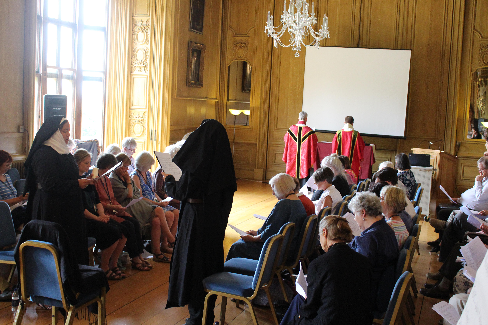
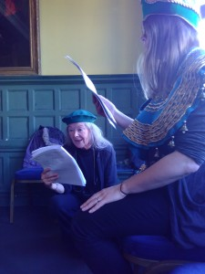

<?xml version="1.0" encoding="UTF-8"?><rss version="2.0"
	xmlns:content="http://purl.org/rss/1.0/modules/content/"
	xmlns:wfw="http://wellformedweb.org/CommentAPI/"
	xmlns:dc="http://purl.org/dc/elements/1.1/"
	xmlns:atom="http://www.w3.org/2005/Atom"
	xmlns:sy="http://purl.org/rss/1.0/modules/syndication/"
	xmlns:slash="http://purl.org/rss/1.0/modules/slash/"
	>

<channel>
	<title>Medieval Convent  Drama &#187; ConventDrama</title>
	<atom:link href="../../../author/conventdrama/feed/index.html" rel="self" type="application/rss+xml" />
	<link>../../../index.html</link>
	<description>University of Fribourg &#124; Exploring the theatrical cultures of medieval women religious&#124; Follow us on Twitter: @MedConventDrama</description>
	<lastBuildDate>Tue, 16 Apr 2019 11:52:07 +0000</lastBuildDate>
	<language>en</language>
	<sy:updatePeriod>hourly</sy:updatePeriod>
	<sy:updateFrequency>1</sy:updateFrequency>
	<generator>http://wordpress.org/?v=4.2.3</generator>
	<item>
		<title>Harlaxton Medieval Symposium: Workshopping Barking Abbey&#8217;s Depositio</title>
		<link>../../../uncategorized/harlaxton-medieval-symposium-workshopping-barking-abbeys-depositio/index.html</link>
		<comments>../../../uncategorized/harlaxton-medieval-symposium-workshopping-barking-abbeys-depositio/index.html</comments>
		<pubDate>Thu, 26 Jul 2018 13:58:01 +0000</pubDate>
		<dc:creator><![CDATA[ConventDrama]]></dc:creator>
				<category><![CDATA[Uncategorized]]></category>

		<guid isPermaLink="false">../../../index.html</guid>
		<description><![CDATA[From the 17th to the 20th of July, the Medieval Convent Drama project left the majestic mountains of Switzerland for a beautiful, wonderfully weird English manor (at least to my very Swiss, very rural eyes!). It was such a pleasure for me to return to the Harlaxton Medieval Symposium after having performed there in 2015 &#8230; <a href="../../../uncategorized/harlaxton-medieval-symposium-workshopping-barking-abbeys-depositio/index.html" class="more-link">Continue reading <span class="screen-reader-text">Harlaxton Medieval Symposium: Workshopping Barking Abbey&#8217;s Depositio</span></a>]]></description>
				<content:encoded><![CDATA[<figure id="attachment_313" style="width: 5184px;" class="wp-caption alignnone"><a href="../../../wp-content/uploads/2018/07/IMG_0145.jpg"></a><figcaption class="wp-caption-text">The priest takes the cross at the start of the Depositio.</figcaption></figure>
<p>From the 17<sup>th</sup> to the 20<sup>th</sup> of July, the Medieval Convent Drama project left the majestic mountains of Switzerland for a beautiful, wonderfully weird English manor (at least to my very Swiss, very rural eyes!). It was such a pleasure for me to return to the Harlaxton Medieval Symposium after having performed there in 2015 in<a href="../../../project-team/index.html"> Elisabeth</a>’s production of John of Beverley, and I was lucky enough to benefit from the Dobson scholarship this year. The theme of the symposium was ‘Performance, Ceremony and Display in Late Medieval Britain’. After Elisabeth’s paper, ‘Putting on the Role: the Performance of Medieval Convent Drama’, we gave a workshop together entitled ‘Exploring Performance, Ceremony and Display with the Nuns of Barking Abbey’.</p>
<p>The workshop had been designed with the assistance of <a href="../../../project-team/index.html">Matthew</a> who provided us with musical notation for the chants of the Barking Abbey’s <em>Depositio</em> and who recruited four brilliant singers/actors to bring them to life. The aim of the workshop was to consider contemporary performance of medieval plays as a tool to increase our understanding of their medieval performances. Because of the nature of our research, we were particularly focused on conventual performance and decided to choose the <em>Depositio</em> (a ceremony performed on Good Friday) as a case study for the workshop. We had never performed this ceremony before but had experimented with Barking Abbey’s performance practices in our April production of the nunnery’s <a href="../../../uncategorized/upcoming-performances-9-april-barking-abbey-easter-plays/index.html"><em>Elevatio</em> and </a><em><a href="../../../uncategorized/upcoming-performances-9-april-barking-abbey-easter-plays/index.html">Visitatio Sepulchri</a>. </em>We felt it would be valuable to continue exploring such practices with the additional help, this time, of a room full of distinguished medieval scholars. We were especially interested in establishing a discussion around the many decisions, often unforeseen, which need to be made when one wants to perform a play. It is easy to overlook some of these when simply studying a text, but staging it forces directors and actors to confront unclear parts of the play, or those open to interpretation. It is an illuminating process for the researcher who is suddenly bound to deepen her reflection on certain areas she had not considered in details before (such as, for instance, <a href="../../../uncategorized/rehearsing-the-barking-abbey-plays/index.html">liturgical vestments</a>). We also hoped the workshop would show how the effect of a play can dramatically differ in performance and can suggest some of its impact on a medieval audience, or at least raise new interrogations for the scholar. The music, for example, lengthens the play and transforms it into something quite different, bringing with it additional sounds and emotions. Performance does not generate direct answers but it draws our attention to new questions, new possibilities, and new interpretations.</p>
<figure id="attachment_311" style="width: 5184px;" class="wp-caption alignnone"><a href="../../../wp-content/uploads/2018/07/IMG_0146.jpg"></a><figcaption class="wp-caption-text">The priests wash the body of Christ, after having taken him down from the cross.</figcaption></figure>
<p>After changing the spatial arrangement of the room to make it look as much as possible like a church with an altar and choir stalls, we started the workshop with a theoretical introduction, detailing the situation of the abbey, the numbers and the identity of the medieval audience and actors, the content and date of the plays, and presenting the project’s previous productions. The participants were then given two versions of the <em>Depositio</em>. The first, a ‘script’ version, similar to the one we had given our actors /singers, had been edited and featured a translation of the rubrics, a translation of the chants in the footnotes, musical notation, and additional speech markers. The second was a simple transcription of the Latin manuscript. We asked the participants to gather into groups and discuss the staging of the play using their handout, as well as the plan of the abbey church which was projected in front of them: how would they do it, how do they think it was done? We tried to help them by giving them questions to lead their reflection: Who sings what? Who does what? How do the various groups move through the space of the church? Where are the cross and the sepulchre? What costumes do the participants wear? What happens to the props?</p>
<figure id="attachment_314" style="width: 5184px;" class="wp-caption alignnone"><a href="../../../wp-content/uploads/2018/07/IMG_0148.jpg"></a><figcaption class="wp-caption-text">The procession begins. Christ is carried by the priests to the sepulchre.</figcaption></figure>
<p>In the third part of the workshop, groups were invited to share their thoughts on the staging of the <em>Depositio</em>. We tried to do this question by question but the discussion proved difficult to focus, as each group had something to say about a different topic. It was, however, incredibly useful to have so many and such various opinions expressed on the <em>Depositio</em> and we are very grateful to everyone who contributed. The following points were raised (there were more, particularly concerning drama and liturgy. However, I have not included them in this blog post since they would require much more space and I am still trying to figure out how to really comprehend and articulate them. They will definitely require another post!):</p>
<p>1) <u>The singers</u>. It seemed odd to musicologists for the priests to start the chants <em>Super omnia ligna</em> and <em>Ecce quomodo moritur iustus, </em>to be followed by the cantrix, and then by the choir. According to them, the normal practice would be for someone to start the chant and to be joined by a second person or group of people, rather than to have three groups as is the case here. They advised looking through the Barking Ordinal (in which the plays are recorded) to check whether this occurs during other ceremonies throughout the year or whether it is an isolated practice. Some suggested the priest would start the chants and be followed by the cantrix who would sing the second part. She would only begin it briefly and give the choir the note before being joined by the rest of the nuns. The second option suggested was that the priest sing the first part of the chant, which would then be entirely repeated by the cantrix. The choir would sing the second part.</p>
<p>2) <u>The procession</u>: The procession seemed very short, which participants felt rather defeated the point of having one in the first place. Some argued the procession might go outside and wondered if this was a practice at Barking Abbey; others questioned the position of the sepulchre and suggested it might be located much further away from the high altar than we had anticipated. Finally, some discussed the three antiphons sung during the procession (<em>In pace in idipsum, Habitabit, Caro mea</em>). They are quite brief and might therefore imply that the procession they accompanied was also short. Alternatively, they might be followed each by a psalm, as they are during the Holy Saturday liturgy, even though psalms are not here indicated in the Ordinal.</p>
<p>3) <u>The sepulchre</u>: Other questions and reflections related to the detachable Christ figure and to the sepulchre. A participant suggested Barking’s temporary sepulchre might be covered with patrons’ coats of arms and colours, and could be used as a display of patronage. Elisabeth’s research has shown her that some curtains, cloths, and carpets used to build Easter sepulchres were donated and recorded in wills. Connections between patronage, commemoration, and these dramatic ceremonies might thus be worth exploring. He also mentioned the possible significance of ‘burying’ the detachable Christ figure in the sepulchre on Good Friday (as seems to be the case in the <em>Depositio</em>) and of taking out a monstrance on Easter Sunday (as seems to be the case in the <em>Elevatio)</em>. This ‘magic trick’, this transformation from a concrete representation of the body of Christ into the consecrated host could be read as a pedagogical demonstration of the nature of the host. It is not just a round, white piece of bread but the actual body of Christ. The process clearly shows the connection between the two, even if they look quite different.</p>
<p>Workshopping the staging of Barking’s <em>Depositio</em> has encouraged me to look further into medieval liturgy. I will certainly dig into the Barking Ordinal, but also consider more generally Holy Week celebrations in the middle ages, as well as processions and their practical aspects: light, smells, amount of people present.</p>
<figure id="attachment_315" style="width: 5184px;" class="wp-caption alignnone"><a href="../../../wp-content/uploads/2018/07/IMG_0149.jpg"></a><figcaption class="wp-caption-text">The priests, abbess, cantrix, and the workshop&#8217;s participants (who represent the rest of the convent) kneel before the sepulchre.</figcaption></figure>
<p>The last part of the workshop consisted of a performance of the <em>Depositio.</em> We would like to thank the singers who brought this ceremony to life for us. Assisted by the first row of participants—who represented the rest of the sisters sitting in the choir stalls and who processed with them to the tomb—they beautifully and solemnly performed the deposition of Christ into the sepulchre. This <em>mise-en-scène</em> was meant to give the participants an idea of what a present-day performance of this ceremony might look like. The aim was not to present them with a finite idea of how we should stage the <em>Depositio</em>, but with a ‘first draft’, a tentative version, in the hope of exposing the ability of modern performance to create discussion and to deepen research by forcing its audience, its directors, and its performers to engage with some often-overlooked aspects of dramatic practices.</p>
<p>Aurélie</p>
<figure id="attachment_310" style="width: 5184px;" class="wp-caption alignnone"><a href="../../../wp-content/uploads/2018/07/IMG_0150.jpg"></a><figcaption class="wp-caption-text">The abbess and the cantrix, followed by the rest of the convent, process during the Barking Depositio.</figcaption></figure>
<p>&nbsp;</p>
]]></content:encoded>
			<wfw:commentRss>../../../uncategorized/harlaxton-medieval-symposium-workshopping-barking-abbeys-depositio/feed/index.html</wfw:commentRss>
		<slash:comments>0</slash:comments>
		</item>
		<item>
		<title>Rehearsing the Barking Abbey Plays</title>
		<link>../../../uncategorized/rehearsing-the-barking-abbey-plays/index.html</link>
		<comments>../../../uncategorized/rehearsing-the-barking-abbey-plays/index.html</comments>
		<pubDate>Fri, 06 Apr 2018 11:00:43 +0000</pubDate>
		<dc:creator><![CDATA[ConventDrama]]></dc:creator>
				<category><![CDATA[Uncategorized]]></category>

		<guid isPermaLink="false">../../../index.html</guid>
		<description><![CDATA[&#160; Our performance of the Barking Abbey plays is approaching quickly and as a first time director, staging it has confronted me with some expected challenges but also with some surprising questions that have changed my perception and given me new knowledge of the plays. We started rehearsing mid-February; the idea was to have at &#8230; <a href="../../../uncategorized/rehearsing-the-barking-abbey-plays/index.html" class="more-link">Continue reading <span class="screen-reader-text">Rehearsing the Barking Abbey Plays</span></a>]]></description>
				<content:encoded><![CDATA[<p>&nbsp;</p>
<figure id="attachment_217" style="width: 2048px;" class="wp-caption alignnone"><a href="../../../wp-content/uploads/2018/04/30581502_10216677878928300_7015899219126910976_o.jpg"></a><figcaption class="wp-caption-text">Dress rehearsal at Maigrauge Abbey, Fribourg. Elevation and adoration of the host</figcaption></figure>
<p>Our performance of the Barking Abbey plays is approaching quickly and as a first time director, staging it has confronted me with some expected challenges but also with some surprising questions that have changed my perception and given me new knowledge of the plays. We started rehearsing mid-February; the idea was to have at first only one rehearsal a week and to record the songs to give the actors the time and the tools to prepare at home. It however became rapidly clear that songs needed to be rehearsed together, particularly when the singers did not all have the same level. People used to singing modern songs but who could not read music felt a little lost. Learning medieval chant by heart is not that easy if you are not used to hearing and singing it. The tune does not appear clearly and if you cannot read music, you struggle to sing the songs. The problem I encountered was that some people could immediately sing them quite well (with the sheet music) and we could then work on movements and emotions, and that others took a long time to do so because they needed to learn them by heart. These rehearsals taught me that however easy it is to forget the importance of usic when reading the play, it is impossible to ignore it in performance. Rehearsing music needs time and when watching what Smoldon insisted on calling ‘music-dramas’, it takes a central place. The performance is an almost constant song and brings to life in unexpected ways the words on the page, creating moving or beautiful moments but also prolonging some of the texts I thought rather short and turning them into challenges for our actors. Singing changes the experience of the play for the actors as well. I play the small role of a novice and when I sing with other actors I feel bound to them in a community where we communicate with one another, more so than when we only move together during the procession. The time the song takes, the necessity to listen to and to be aware of each other, make it a communal experience even when we are standing in different parts of the church.</p>
<figure id="attachment_216" style="width: 2048px;" class="wp-caption alignnone"><a href="../../../wp-content/uploads/2018/04/30530780_10216677874928200_1947616236779077632_o.jpg"></a><figcaption class="wp-caption-text">Dress rehearsal at Maigrauge Abbey, Fribourg. Procession following the Harrowing of Hell sequence.</figcaption></figure>
<p>Directing this play has also resulted in a near-obsessive interest for liturgical vestments, movements and rituals, which had not been my prime concern when working on the play earlier. When Tamara Haddad, who is in charge of costume and I sat down to look more closely at what I thought were rather lengthy ‘stage directions’, we noticed the amount of information missing from the Barking Ordinal. The description of the officiating priest wearing ‘a cope’ which had seemed until then pretty straightforward now raised many questions: what colour was that cope, was it worn over an alb or a surplice, would the priest have worn stoles as he normally did under a cope, would the cincture have gone over or under the stole, how does one tie a cincture, would the stole have been crossed as it was during mass, what colour was the stole, how wide, how long, should the cope have a hood, do we really need to put our actors in cassocks no one will see, would priests have worn a maniple in such celebrations? We also discussed and argued over processional orders, how to cense a sepulchre containing a consecrated host, how to hold a monstrance, how to hit your breast when confessing, etc. Thankfully, a Dominican friar helped us answer those questions which were obvious to the writers of the Ordinal but certainly not to 21<sup>st</sup>-century literary scholars. Research into costumes and movement taught us about our knowledge (or lack of) and the knowledge and assumptions of the manuscript composer. It also made us realise the complexity and the precise symbolism of liturgical vestments and movements.</p>
<p>Aurélie</p>
]]></content:encoded>
			<wfw:commentRss>../../../uncategorized/rehearsing-the-barking-abbey-plays/feed/index.html</wfw:commentRss>
		<slash:comments>0</slash:comments>
		</item>
		<item>
		<title>Filmed Excerpts from the Performances of the Huy Nativities</title>
		<link>../../../uncategorized/filmed-excerpts-from-the-performances-of-the-huy-nativities/index.html</link>
		<comments>../../../uncategorized/filmed-excerpts-from-the-performances-of-the-huy-nativities/index.html</comments>
		<pubDate>Tue, 20 Mar 2018 09:02:13 +0000</pubDate>
		<dc:creator><![CDATA[ConventDrama]]></dc:creator>
				<category><![CDATA[Uncategorized]]></category>

		<guid isPermaLink="false">../../../index.html</guid>
		<description><![CDATA[Following our performances of the Huy Nativity in December, we have prepared a short film featuring excerpts from the two indoor performances (the church of St Ursule in Fribourg and the chapel of the Carmel du Pâquier), as well as stills from the outdoor performance (University of Fribourg).  Many thanks to Tamara Haddad for editing these &#8230; <a href="../../../uncategorized/filmed-excerpts-from-the-performances-of-the-huy-nativities/index.html" class="more-link">Continue reading <span class="screen-reader-text">Filmed Excerpts from the Performances of the Huy Nativities</span></a>]]></description>
				<content:encoded><![CDATA[<figure id="attachment_130" style="width: 660px;" class="wp-caption aligncenter"><a href="../../../wp-content/uploads/2016/04/DRVgEuTWAAA4Ziz.jpg"></a><figcaption class="wp-caption-text">Janine Barrett, Sarah Knoepfli, Daniela Lurman-Lange, Diana Helfer and Jasinta Lurman perform the visit of Mary&#8217;s mother and sisters to the Holy Family in the Huy Nativity, Eglise St Ursule, Fribourg, Dec. 17.</figcaption></figure>
<p>Following our performances of the Huy Nativity in December, we have prepared a short <a href="https://www.youtube.com/watch?v=kYW8p-tCzcM&amp;feature=youtu.be" target="_blank">film</a> featuring excerpts from the two indoor performances (the church of St Ursule in Fribourg and the chapel of the Carmel du Pâquier), as well as stills from the outdoor performance (University of Fribourg).  Many thanks to Tamara Haddad for editing these excerpts.</p>
<p>The production and this footage in particular will be discussed by Dr Olivia Robinson in July 2018 at the <a href="http://newchaucersociety.org/pages/entry/2018-congress">International Congress</a> of the New Chaucer Society, Toronto.</p>
]]></content:encoded>
			<wfw:commentRss>../../../uncategorized/filmed-excerpts-from-the-performances-of-the-huy-nativities/feed/index.html</wfw:commentRss>
		<slash:comments>0</slash:comments>
		</item>
		<item>
		<title>The Huy Nativities: Fifteenth-Century Christmas Theatre from a Carmelite Convent / La Nativité de Huy: du théâtre du XVème siècle provenant d&#8217;un couvent Carmélite</title>
		<link>../../../uncategorized/the-huy-nativities-fifteenth-century-christmas-theatre-from-a-carmelite-convent/index.html</link>
		<comments>../../../uncategorized/the-huy-nativities-fifteenth-century-christmas-theatre-from-a-carmelite-convent/index.html</comments>
		<pubDate>Mon, 13 Nov 2017 08:37:13 +0000</pubDate>
		<dc:creator><![CDATA[ConventDrama]]></dc:creator>
				<category><![CDATA[Uncategorized]]></category>

		<guid isPermaLink="false">../../../index.html</guid>
		<description><![CDATA[Announcing the project&#8217;s first performances: two short Nativity plays which originated in the Carmelite house of the Dames Blanches in Huy (Belgium). Performed in partnership with the Ursuline sisters of Fribourg and the Carmelite sisters of Le Pâquier by an all-female cast. Attendance is free and open to everyone! 13th December: Eglise des Ursulines (Rue &#8230; <a href="../../../uncategorized/the-huy-nativities-fifteenth-century-christmas-theatre-from-a-carmelite-convent/index.html" class="more-link">Continue reading <span class="screen-reader-text">The Huy Nativities: Fifteenth-Century Christmas Theatre from a Carmelite Convent / La Nativité de Huy: du théâtre du XVème siècle provenant d&#8217;un couvent Carmélite</span></a>]]></description>
				<content:encoded><![CDATA[<p>Announcing the project&#8217;s first performances: two short Nativity plays which originated in the Carmelite house of the Dames Blanches in Huy (Belgium). Performed in partnership with the Ursuline sisters of Fribourg and the Carmelite sisters of Le Pâquier by an all-female cast.</p>
<div style="width: 660px; " class="wp-video"><!--[if lt IE 9]><script>document.createElement('video');</script><![endif]-->
<video class="wp-video-shortcode" id="video-111-1" width="660" height="371" preload="metadata" controls="controls"><source type="video/mp4" src="../../../wp-content/uploads/2017/11/HUY-NATIVITIES-PROMO-FINAL.mp4" /><a href="../../../wp-content/uploads/2017/11/HUY-NATIVITIES-PROMO-FINAL.mp4">../../../wp-content/uploads/2017/11/HUY-NATIVITIES-PROMO-FINAL.mp4</a></video></div>
<p>Attendance is free and open to everyone!</p>
<p>13th December: Eglise des Ursulines (Rue de Lausanne 92, 1700 Fribourg), 20:00</p>
<p>14th December: Aula Magna, Université de Fribourg (Avenue de l&#8217;Europe 20, 1700 Fribourg), 19:30</p>
<p>15th December: Carmel du Pâquier (Route du Carmel 67, 1661 Le Pâquier-Montbarry), 19:30</p>
<p>Nous annonçons notre première mise-en-scène: deux courtes Nativités, provenant de la maison Carmélite des Dames Blanches de Huy (Belgique). Celles-ci seront jouées par une distribution entièrement féminine, en partenariat avec les sœurs Ursulines de Fribourg et les sœurs Carmélites du Pâquier.</p>
<p>L&#8217;entrée est libre et les pièces sont ouvertes à tous!</p>
<p>&nbsp;</p>
<div style="width: 660px; " class="wp-video"><video class="wp-video-shortcode" id="video-111-2" width="660" height="371" preload="metadata" controls="controls"><source type="video/mp4" src="../../../wp-content/uploads/2016/04/NATIVITÉS-PROMO-EN-FRANCAIS.mp4" /><a href="../../../wp-content/uploads/2016/04/NATIVITÉS-PROMO-EN-FRANCAIS.mp4">../../../wp-content/uploads/2016/04/NATIVITÉS-PROMO-EN-FRANCAIS.mp4</a></video></div>
]]></content:encoded>
			<wfw:commentRss>../../../uncategorized/the-huy-nativities-fifteenth-century-christmas-theatre-from-a-carmelite-convent/feed/index.html</wfw:commentRss>
		<slash:comments>0</slash:comments>
<enclosure url="../../../wp-content/uploads/2017/11/HUY-NATIVITIES-PROMO-FINAL.mp4" length="2703945" type="video/mp4" />
<enclosure url="../../../wp-content/uploads/2016/04/NATIVITÉS-PROMO-EN-FRANCAIS.mp4" length="0" type="video/mp4" />
		</item>
		<item>
		<title>Accounting and Remembering</title>
		<link>../../../uncategorized/accounting-and-remembering/index.html</link>
		<comments>../../../uncategorized/accounting-and-remembering/index.html</comments>
		<pubDate>Wed, 04 Oct 2017 08:22:38 +0000</pubDate>
		<dc:creator><![CDATA[ConventDrama]]></dc:creator>
				<category><![CDATA[Uncategorized]]></category>

		<guid isPermaLink="false">../../../index.html</guid>
		<description><![CDATA[The extent to which commemorating the dead is tied up with money in the late Middle Ages (and indeed later) has been forcibly brought home to me this week, as I’ve been transcribing some entries from the surviving book of obituaries of the medieval convent I’m currently working on, the Dames Blanches de Huy. Having &#8230; <a href="../../../uncategorized/accounting-and-remembering/index.html" class="more-link">Continue reading <span class="screen-reader-text">Accounting and Remembering</span></a>]]></description>
				<content:encoded><![CDATA[<p>The extent to which commemorating the dead is tied up with money in the late Middle Ages (and indeed later) has been forcibly brought home to me this week, as I’ve been transcribing some entries from the surviving book of obituaries of the medieval convent I’m currently working on, the Dames Blanches de Huy.</p>
<p>Having taught literary texts like <em><a href="http://d.lib.rochester.edu/teams/text/hahn-sir-gawain-awyntyrs-off-arthur-introduction">The Awntyrs off Arthur</a></em> to generations of undergraduate students, I&#8217;m certainly experienced in explaining the ways in which repeating (and paying for) masses for departed souls would have been thought to have an effect on their experiences in the afterlife, expediting their time in Purgatory; and in exploring the ways in which the worlds of the living and the dead so frequently intersect in this and in other contexts in the literature of the Middle Ages.  However, although I was fully aware of this practice in theory, seeing its real-life application play out still caught me by surprise: I found transcribing the convent’s obituaries, particularly those relating to its local donors, with their minute enumeration of amounts, annuities or objects donated, and their monetary assessment of the relative value of those objects, quite uncomfortable.</p>
<p>Even more uncomfortable, I noticed, were the entries where I had to transcribe notes added by a very much later hand to the original (usually medieval) obituary. These notes seem to have been undertaken by someone in the seventeenth or eighteenth century overhauling the convent’s books, particularly their sources of income.  Beneath several of the earlier obituaries, this hand has quite sharply noted that prayers for X or Y individual are no longer necessary, since the source of income has long since stopped, or they could never find any evidence that it was paid in the first place, and that the entry was, therefore, “un abbus” [an abuse].</p>
<p>Perhaps it was because these entries related to ‘real-life’ individuals who had lived and died – individuals who, moreover, I had sometimes come across before in other documents relating to the administration of the house, such as in the convent school’s accounts, and who, presumably, believed sincerely in the power of the sisters’ prayers to determine the destination of their souls – but I was surprised by how much this affected me, and how merciless or financially hard-nosed it seemed.  The experience of transcribing these obituaries is bringing home to me again just how much and how profoundly the sensibilities and approaches to death prevalent in the culture in which I have been raised differ from those of western medieval Christendom, and just how very distant and foreign my own beliefs, emotions and responses to death are from those of the women whose lives and experiences I am investigating.   I knew this already, of course, in an intellectual sense: but the practice of working through the transcription of these obituaries has made me feel it in a slightly different way.</p>
<p>On the one hand I feel relieved that I don’t associate death, and the fate of a soul after death, so closely with totting up financial gain, and measuring time spent suffering in Purgatory. On the other, however, I’m intrigued, but also comforted, by the idea of a community in which the names, familial relationships and loves of the dead are never lost or forgotten, because they are recorded and repeated formally by generations of sisters, and are thus commemorated long after their passing.  A community, in short, in which regular memorial practices are a core group activity, and in which the line between living and dead members is, therefore, neither rigid nor always obvious.</p>
<p>Liv.</p>
]]></content:encoded>
			<wfw:commentRss>../../../uncategorized/accounting-and-remembering/feed/index.html</wfw:commentRss>
		<slash:comments>0</slash:comments>
		</item>
		<item>
		<title>Read-through en français!</title>
		<link>../../../uncategorized/read-through-en-francais/index.html</link>
		<comments>../../../uncategorized/read-through-en-francais/index.html</comments>
		<pubDate>Mon, 24 Jul 2017 15:08:22 +0000</pubDate>
		<dc:creator><![CDATA[ConventDrama]]></dc:creator>
				<category><![CDATA[Uncategorized]]></category>

		<guid isPermaLink="false">../../../index.html</guid>
		<description><![CDATA[&#160; &#160; &#160; &#160; &#160; &#160; Last month, for the first time, we were able to see and hear two of the convent plays central to our project in their original medieval Walloon French, when we held a staged read-through in Oxford.  Aurélie and I had translated one of the project’s play scripts into present-day &#8230; <a href="../../../uncategorized/read-through-en-francais/index.html" class="more-link">Continue reading <span class="screen-reader-text">Read-through en français!</span></a>]]></description>
				<content:encoded><![CDATA[<figure id="attachment_97" style="width: 225px;" class="wp-caption alignleft"><a href="../../../wp-content/uploads/2017/07/IMG_20170612_184309.jpg"></a><figcaption class="wp-caption-text">Herod and his Clerc</figcaption></figure>
<figure id="attachment_98" style="width: 225px;" class="wp-caption alignright"><a href="../../../wp-content/uploads/2017/07/IMG_20170612_185809.jpg"></a><figcaption class="wp-caption-text">Jane Bliss as Herod&#8217;s Fool</figcaption></figure>
<p>&nbsp;</p>
<p>&nbsp;</p>
<p>&nbsp;</p>
<p>&nbsp;</p>
<p>&nbsp;</p>
<p>&nbsp;</p>
<p>Last month, for the first time, we were able to see and hear two of the convent plays central to our project in their original medieval Walloon French, when we held a staged read-through in Oxford.  Aurélie and I had translated one of the project’s play scripts into present-day English earlier this year, for an improvised read-through at the <a href="http://www.lancaster.ac.uk/users/meth/intro.html">Medieval English Theatre</a> conference – we were very keen to see how a group of theatre specialists reacted to the play, and to see how it worked spatially, and this event gave us lots of ideas and pointers.  However, because our participants were primarily first-language English speakers, and were specialists in Medieval English drama, we didn’t feel that it would be helpful to use the original medieval script.   However, our recent read-through was mostly populated by members of the Oxford Anglo-Norman Reading Group – and so, with a group of Old and Middle French-language specialists at our mercy, it was a great opportunity for us to hear the medieval words themselves: to appreciate the varying diction, registers, tones and rhythms which our plays deployed in their original linguistic format, and to grasp more concretely something of their aural qualities and their formal features.</p>
<p>One of the most interesting things we noticed was the large area which was clearly needed for parts of these plays – particularly those sections involving the three kings, which seemed to us to be very processional and stately.  This had been evident at the Medieval English Theatre conference too, but having to stage our second read-through in a middle-sized room rather than in a large theatre space, as we had at METh, really drove this home – there was nowhere near enough space.   Also interesting was the change in spatial needs from one play to the next, and the corresponding change in tone, and in aesthetic and visual experience: might these plays have intended for performance in very different spaces within the convent?  The plays seemed to work very frequently with sudden changes of speed or tone – movement to stillness, song to speech, anger to calmness or devotion, for example.   This was something which came over much more strongly in performance than it had when reading the scripts.</p>
<p>We owe a big thankyou to all those who volunteered – Huw, Carol, Jane, Graham, Kats, Audrey, Serin, Kierri and Marco – we had an excellent evening, and learned a great deal from your brilliant performances: merci!</p>
]]></content:encoded>
			<wfw:commentRss>../../../uncategorized/read-through-en-francais/feed/index.html</wfw:commentRss>
		<slash:comments>0</slash:comments>
		</item>
		<item>
		<title>Medieval Convent Drama at the H-WRBI 2017 Conference</title>
		<link>../../../uncategorized/medieval-convent-drama-at-the-h-wrbi-2017-conference/index.html</link>
		<comments>../../../uncategorized/medieval-convent-drama-at-the-h-wrbi-2017-conference/index.html</comments>
		<pubDate>Wed, 14 Jun 2017 08:38:40 +0000</pubDate>
		<dc:creator><![CDATA[ConventDrama]]></dc:creator>
				<category><![CDATA[Uncategorized]]></category>

		<guid isPermaLink="false">../../../index.html</guid>
		<description><![CDATA[(The Hague, Koninklijke Bibliotheek MS 71 A 24 Fol. 28r) Aurélie and I have just returned from a wonderful two days at University College, Dublin, where we’ve been attending the 2017 conference of the History of Women Religious in Britain and Ireland (H-WRBI) network: a selection of papers covering a wide range of approaches, examples &#8230; <a href="../../../uncategorized/medieval-convent-drama-at-the-h-wrbi-2017-conference/index.html" class="more-link">Continue reading <span class="screen-reader-text">Medieval Convent Drama at the H-WRBI 2017 Conference</span></a>]]></description>
				<content:encoded><![CDATA[<p><a href="../../../wp-content/uploads/2017/06/KB-71-A-24-f-28r.jpg"></a></p>
<p><span lang="EN-GB" style="font-family: 'Noto Serif'; color: black;"><span style="font-size: medium;">(The Hague, Koninklijke Bibliotheek MS 71 A 24 Fol. 28r)</span></span></p>
<p><span lang="EN-GB" style="font-family: 'Noto Serif';"><span style="color: #000000; font-size: medium;">Aurélie and I have just returned from a wonderful two days at University College, Dublin, where we’ve been attending the 2017 conference of the History of Women Religious in Britain and Ireland (<a href="https://historyofwomenreligious.org">H-WRBI</a>) network: a selection of papers covering a wide range of approaches, examples and material related to exploring the varied lives, experiences and impacts of women religious from the medieval period to the present day.  The conference theme this year was the archive: oral, material, visual and digital, and hearing such rich papers about the research projects and challenges of the network’s members has thrown up some great methodological questions for us on the Medieval Convent Drama Project – even when, as in the case of many speakers, the areas under discussion were focused on the nineteenth and twentieth centuries.    </span></span></p>
<p><span lang="EN-GB" style="font-family: 'Noto Serif';"><span style="color: #000000; font-size: medium;">I was particularly interested to hear speakers discussing the creation and curation of digital archives, and the construction and interpretation of oral history and memory.  Several speakers analysed semi-structured interviews with sisters which they had filmed and transcribed, and which formed the raw data for their research.  We have recently set up some partnerships with a group of women’s houses in Fribourg and the surrounding area, with the intention of performing a selection of our medieval convent plays using an all-female cast within their convents, performances will be open both to the sisters and to members of the public.  We’re also planning to undertake at least one additional performance with a cast made up of sisters, as well as these public performances by non-monastic actors, in the convent spaces.  The papers I heard this week at HWRBI have really made me think more deeply about the best ways of generating, accessing and recording the sisters’ responses to participating in these events, and their reflections and/or recollections concerning the role and significance of drama as part of convent life, both in the past and in the present.   We’ve already had some very interesting informal discussions with a Carmelite sister in Belgium, whose convent generously welcomed us to view their archive and to discuss our project: these conversations revealed that drama is an ongoing part of Carmelite recreation (at least in this particular convent) to this day, and we have anecdotal evidence from some of the women’s houses in Fribourg with whom we are partnering that theatre is practiced quite regularly here too.  Making space, time and provision within our project to ask the nuns with whom we will work to think and reflect out loud on the devotional and emotional affordances of theatre, both in terms of practising it and in terms of watching it unfold in their convent spaces, could provide some really important leads for us, and recording their reflections as expressed verbally by different individuals would allow their voices, thoughts and feelings to raise some of the research questions, or to frame a part of the research agenda, which we seek to explore.</span></span></p>
<p><span lang="EN-GB" style="font-family: 'Noto Serif';"><span style="color: #000000; font-size: medium;">I’ve also been prompted by some of the papers at H-WRBI which explored films made by, or with the cooperation of, sisters to think more creatively about one of the outputs we will produce during this phase of the project.   We had already planned to film some of the preparation for the performances, documenting decisions taken during rehearsals and actors’ reactions to the texts, and perhaps juxtaposing some of the same scenes performed in different spaces and at different locations.  I’m now wondering if we might not be able to try to include some of the sisters’ voices here too – perhaps alongside relevant medieval and later archival material from the convents from which our plays originally hail – to create a documentary-style piece or even, perhaps, a digital ‘exhibition’ incorporating film, image and text, that focuses not just on the performance of the medieval plays from the actors’ and director’s perspectives, but also on their reception within the different religious orders and different groups of nuns who take part in their performance, either through acting themselves or through spectating.  It’s early days yet, of course, and we’ve got a lot to consider here – not least in terms of requesting and gaining permission from the various people and research repositories involved – but H-WRBI 2017 left both Aurélie and I feeling enthused and excited about the range of approaches and outputs we could potentially undertake with the Medieval Convent Drama’s research materials.  </span></span></p>
<p><span lang="EN-GB" style="font-family: 'Noto Serif';"><span style="color: #000000; font-size: medium;">Follow us on Twitter!   @MedConventDrama</span></span></p>
<p><span lang="EN-GB"><span style="color: #000000; font-family: Calibri; font-size: medium;"> </span></span></p>
<p><span lang="EN-GB"><span style="color: #000000; font-family: Calibri; font-size: medium;"> </span></span></p>
<p>&nbsp;</p>
]]></content:encoded>
			<wfw:commentRss>../../../uncategorized/medieval-convent-drama-at-the-h-wrbi-2017-conference/feed/index.html</wfw:commentRss>
		<slash:comments>0</slash:comments>
		</item>
		<item>
		<title>Performance of Digby &#8216;Herod&#8217;s Killing of the Children&#8217; play</title>
		<link>../../../uncategorized/performance-of-digby-herods-killing-of-the-children-play/index.html</link>
		<comments>../../../uncategorized/performance-of-digby-herods-killing-of-the-children-play/index.html</comments>
		<pubDate>Sun, 05 Feb 2017 13:08:37 +0000</pubDate>
		<dc:creator><![CDATA[ConventDrama]]></dc:creator>
				<category><![CDATA[Uncategorized]]></category>

		<guid isPermaLink="false">../../../index.html</guid>
		<description><![CDATA[On Wednesday, 8th February, in New College Chapel, the Medieval Convent Drama project together with Frideswide Voices will perform Herod&#8217;s Killing of the Children and the Presentation in the Temple from the Digby Manuscript, that was copied c.1512. Admission is free and all are welcome: the performance will start at 7pm and will last about an hour. Download &#8230; <a href="../../../uncategorized/performance-of-digby-herods-killing-of-the-children-play/index.html" class="more-link">Continue reading <span class="screen-reader-text">Performance of Digby &#8216;Herod&#8217;s Killing of the Children&#8217; play</span></a>]]></description>
				<content:encoded><![CDATA[<p><a href="../../../wp-content/uploads/2016/04/herod.png"></a></p>
<p>On Wednesday, 8th February, in New College Chapel, the Medieval Convent Drama project together with Frideswide Voices will perform <em>Herod&#8217;s Killing of the </em><i>Children </i>and <em>the Presentation in the Temple</em> from the Digby Manuscript, that was copied c.1512.</p>
<p>Admission is free and all are welcome: the performance will start at 7pm and will last about an hour.</p>
<p><a href="../../../wp-content/uploads/2017/02/Medieval-Convent-Drama-play.pdf">Download the poster here</a></p>
<p>&nbsp;</p>
]]></content:encoded>
			<wfw:commentRss>../../../uncategorized/performance-of-digby-herods-killing-of-the-children-play/feed/index.html</wfw:commentRss>
		<slash:comments>0</slash:comments>
		</item>
	</channel>
</rss>
